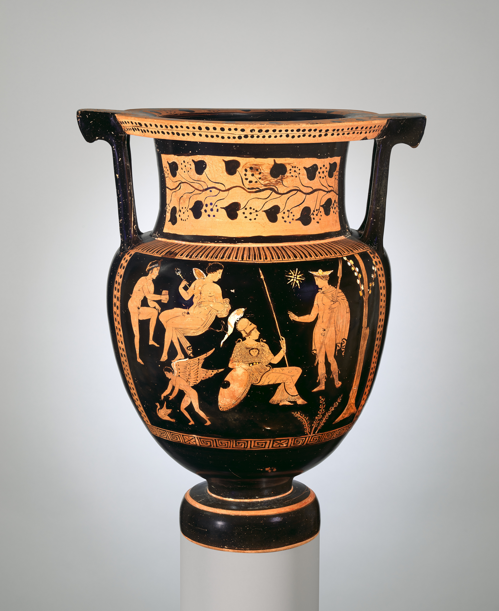

Greek Mythology is a very interesting topic when it comes to history. In Ancient Greece, during the bronze age (around 3000-1100 BCE) Greek Mythology was formed. These myths likely started from stories heard by word and was spread quickly. Soon, these myths became a big part of ancient Greek culture. These myths were passed down from generations by poetry, by word, and even by theatre and festivals! But the most common way was by word.
Greek mythology isn't just about gods. It is way more than just that! There are plenty of gods, But there are also other figures as well. These figures include Demi-gods, Titans, and other monsters as well. Greek mythology also includes many stories that explain relationships between gods, how the gods came to be, and stories that taught good lessons too. These gods were known to live on Mount Olympus (Or atvleast most of them did). Each and every god had their own personality and life, which shows how descriptive Greek Mythology gets! Every god is in charge of something different, for example, Zeus is in charge of lightning. They basically existed to rule nature and keep control over the humans, but they often acted out of jealousy and other feelings.
Historians have found greek mythology through many ways. These ways are described here:

- Literary sources: Greek myth was spread by word, which historians obviously can't hear or recall. But what they have found are many diffrent stories and poems written down. These stories were written on papyrus scrolls, wax tablets, and sometimes even animal skin. These literary devices usually contained stories, but sometimes there were poems, hymns, and even theatrical plays! A very important surviving document was Homer's lliad and Odyssey , which contained some herioc tales. This was a very important document, since it served as a quality of greek education and culture, and taught us more about Ancient Greece.
- Visual Representaions and Art: Plenty of art was made of these myths. This art was very detailed with intricate designs. There was marble sculptures for the gods, which ranged from just the god to a few gods doing something. These sculptures were never painted in color, they were always left colorless. There were also vase paintings. These vases were usually painted with black and red figures, and the oaintings told a story about Greek myth. To make these vases, artists would use iron-rich clay and a very percise three-stage kiln firing process. This would give it that black and red look. There were also just traditional pantings too. These paintings were also to tell stories and were usually painted on wooden panels called pinakes.
- Archaelogy (the Physical Evidence) Alot of Ancient Greece and the Greek Myth lies in the archaelogy. These are things like temples, sanctuaries, and even tombs or alters. Offerings were also things found. Most of these temples and sancutaries were made to honor gods, which provides more evidence for greek mythology.
This video tells more about greek mythology.
Here is another website about Greek Mythology
Explore the navigation bar to learn more.